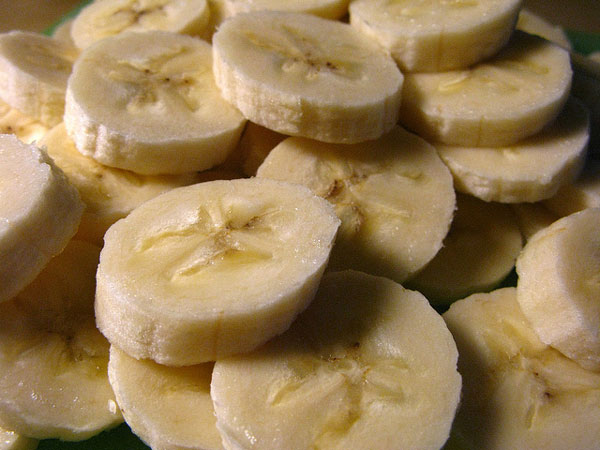

Bananen-Milchshake

Zutaten:
- 1 Banane
- 250 ml Milch
- 3 Eiswürfel
- Mixer
Zubereitung:
- Schäle die Banane und gib sie in den Mixer
- Füge die Milch und die Eiswürfel hinzu
- Schalte den Mixer für 30 Sekunden ein
- Genieße deinen Milchshake!
Bewertungen:
- Markus: war wirklich einfach zuzubereiten - 9/10
- Adele: ok, aber der Geschmack wäre besser mit noch einer Banane - 7/10